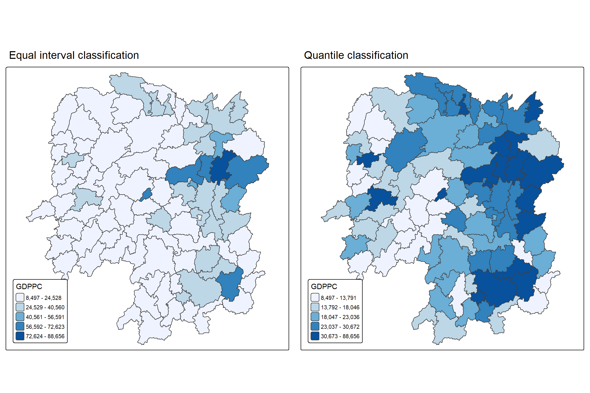
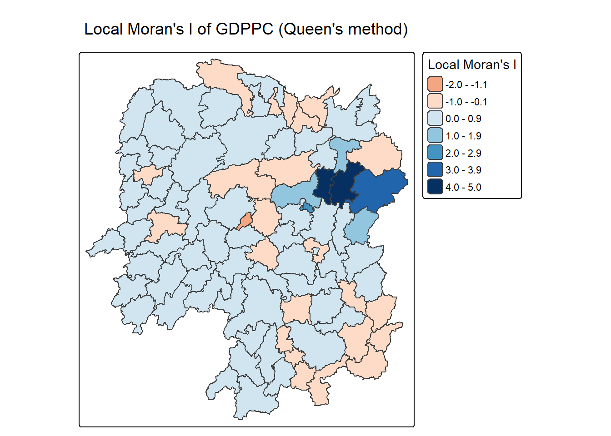
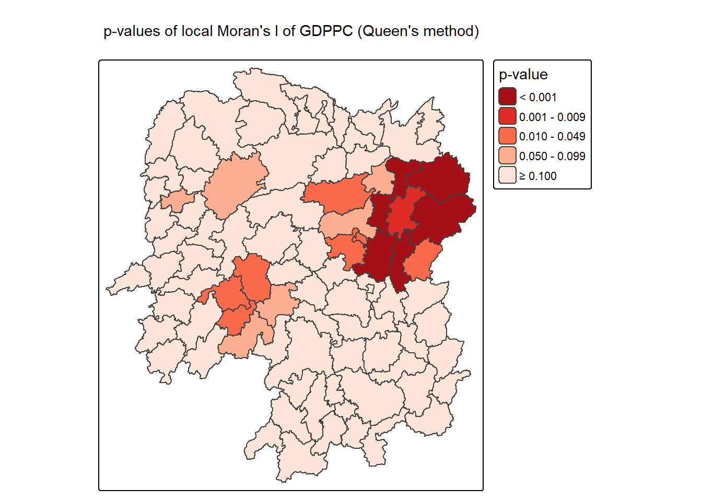
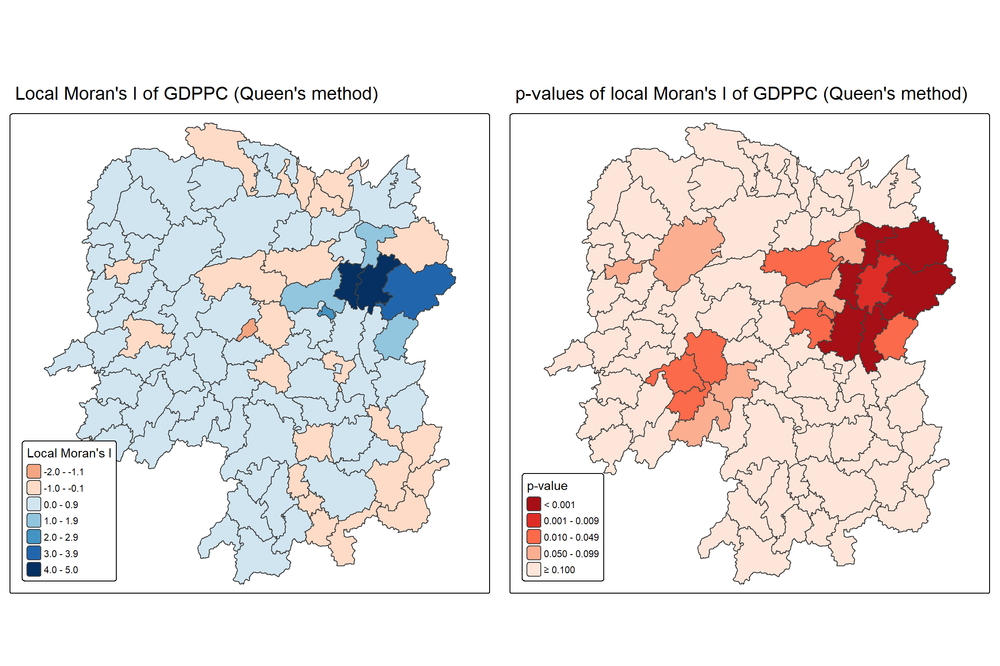
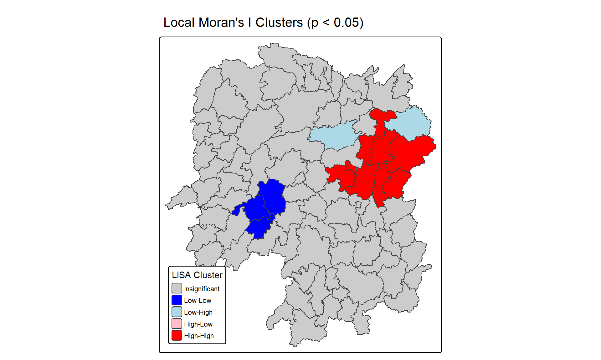
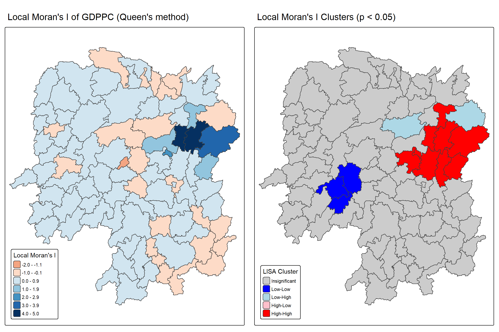

pacman::p_load(sf, sfdep, tmap, tidyverse)Hands-on Exercise 5B: Local Measures of Spatial Autocorrelation
1 Overview
Local Measures of Spatial Autocorrelation (LMSA) focus on the relationship between each observation and its surroundings. They are not summary statistics but scores, one per location, that reveal where the spatial structure occurs. The intuition is similar to that of the global measures, and some are mathematically connected: a global statistic can be decomposed into a collection of local ones. Local Indicators of Spatial Association (LISA) are one such example, while the Getis-Ord’s Gi-statistics is an alternative LMSA that provides complementary or similar insights on the same data.
This exercise focuses on computing Local Measures of Spatial Autocorrelation (LMSA) using the sfdep package. It covers the following:
- importing the geospatial data with sf
- importing the csv file with readr
- performing a relational join with dplyr
- computing LISA statistics to detect clusters and outliers
- computing Getis-Ord’s Gi-statistics to detect hot spots and cold spots
- visualising the results with tmap
2 Analytical Questions
In spatial policy, one of the main development objectives of the local government and planners is to ensure equal distribution of development in the province.
This exercise examines the spatial pattern of a selected development indicator, GDP per capita (“GDPPC”), of Hunan Province, China. Three questions are addressed in sequence:
- Is GDPPC evenly distributed across the counties of Hunan?
- If not, is there evidence of spatial clustering?
- If so, where are the clusters located?
The first two questions were answered in Hands-on Exercise 5A using global measures of spatial autocorrelation. This exercise addresses the third using local measures.
3 The Study Area and Data
Two data sets are used:
| Data set | Format | Description |
|---|---|---|
| Hunan | ESRI shapefile | County boundary layer for Hunan province |
| Hunan_2012.csv | csv | Selected local development indicators for Hunan’s counties in 2012 |
4 Installing and Loading R Packages
Four packages are used in this exercise:
- sf imports and handles the geospatial data
- sfdep computes the spatial weights and the local spatial autocorrelation statistics
- tmap produces the choropleth maps
- tidyverse supports attribute data handling
5 Reproducibility
The local Moran’s I and Getis-Ord’s Gi-statistics computations rely on random permutations of the data. A seed is set so that the simulated results are identical across renders.
set.seed(123)6 Getting the Data into R
The boundary layer and the indicator table are imported separately and then combined through a relational join.
6.1 Importing the Shapefile
The shapefile is imported with st_read() of sf, which returns a simple features object.
hunan <- st_read(dsn = "data/geospatial",
layer = "Hunan") %>%
st_transform(crs = 32650)Reading layer `Hunan' from data source
`C:\yxlinn\ISSS626-GAA\Hands-on_Ex\Hands-on_Ex05B\data\geospatial'
using driver `ESRI Shapefile'
Simple feature collection with 88 features and 7 fields
Geometry type: POLYGON
Dimension: XY
Bounding box: xmin: 108.7831 ymin: 24.6342 xmax: 114.2544 ymax: 30.12812
Geodetic CRS: WGS 84
Tip
The raw data is in WGS 84 geographic coordinates system. For geospatial analysis, it is appropriate to use projected coordinates system. In the code chunk above, st_transform() is used to transform Hunan geospatial data from WGS 84 to UTM zone 50N (i.e. EPSG: 32650).
6.2 Importing the CSV File
Hunan_2012.csv is imported with read_csv() of readr, which returns a data frame class.
hunan2012 <- read_csv("data/aspatial/Hunan_2012.csv")6.3 Performing relational join
The attribute table of hunan is extended with the fields of hunan2012 using left_join() of dplyr.
hunan <- left_join(hunan, hunan2012) %>%
select(1:4, 7, 15)6.4 Visualising Regional Development Indicator
The distribution of GDPPC 2012 is mapped as two choropleth maps using tmap, one with equal interval classification and the other with quantile classification.
equal <- tm_shape(hunan) +
tm_polygons(fill = "GDPPC",
fill.scale = tm_scale_intervals(
style = "equal",
n = 5,
values = "brewer.blues")) +
tm_layout(legend.position = c("left", "bottom"),
main.title = "Equal interval classification")
quantile <- tm_shape(hunan) +
tm_polygons(fill = "GDPPC",
fill.scale = tm_scale_intervals(
style = "quantile",
n = 5,
values = "brewer.blues")) +
tm_layout(legend.position = c("left", "bottom"),
main.title = "Quantile classification")
tmap_arrange(equal,
quantile,
asp = 1,
ncol = 2)
Note
Interpretation:
Outliers and clusters:
Both maps suggest clustering and possible outliers from GDPPC. In the equal interval map, most counties fall in the lowest class, while a group of adjacent counties in the east part of the province holds the highest classes. A small county near the centre and a county in the south-east stand out from their neighbours and are possible outliers. In the quantile map, the high classes extend across the east and north-east, with a second group in the south-east.
Hot spots and cold spots:
The east group appears to be a hot spot, since counties with high GDPPC sit next to one another. The west and north-west appear to be a cold spot, most visibly in the quantile map, where these counties fall mainly in the lowest classes. The equal interval map is less informative for cold spots, as most of the province falls in the lowest class.
7 Local Indicators of Spatial Association (LISA)
Local Indicators of Spatial Association (LISA) are statistics that evaluate the existence of clusters and outliers in the spatial arrangement of a variable. A local cluster in GDPPC means that a group of neighbouring counties has higher or lower values than would be expected under a random spatial distribution.
This section applies local Moran’s I, a LISA statistic, to detect clusters and outliers from GDPPC across the counties of Hunan Province.
7.1 Computing Contiguity Spatial Weights
Before the global spatial autocorrelation statistics can be computed, spatial weights must be constructed for the study area. The spatial weights define the neighbourhood relationships between the geographical units, which are the counties in this case.
In the code chunk below, st_contiguity() of sfdep is used to compute contiguity weight matrices for the study area. This function builds a neighbour list based on counties that share a boundary. Its queen argument controls the contiguity criterion: TRUE (default) uses the Queen criterion (shared edges or corners count as neighbours), while FALSE uses the stricter Rook criterion (shared edges only).
st_weights() then calculates the weights from the neighbour list, using three arguments:
nb: The neighbour list, as created byst_contiguity().style: The weighting scheme. “W” (default), is row standardised, so each county’s weights sum to one across its neighbours. Other schemes (“B”, “C”, “U”, “S”) are available for cases needing a different standardisation.allow_zero: IfTRUE, assigns a weight of zero rather than an error to a county without neighbours.
wm_q <- hunan %>%
mutate(nb = st_contiguity(geometry),
wt = st_weights(nb, style = "W"),
.before = 1)
Tip
mutate() is used to write the computed nb and wt columns back into hunan.
Below code chunk reveals the neighbour list.
summary(wm_q$nb)Neighbour list object:
Number of regions: 88
Number of nonzero links: 448
Percentage nonzero weights: 5.785124
Average number of links: 5.090909
Link number distribution:
1 2 3 4 5 6 7 8 9 11
2 2 12 16 24 14 11 4 2 1
2 least connected regions:
30 65 with 1 link
1 most connected region:
85 with 11 linksThe summary report shows that there are 88 area units in Hunan. The most connected area unit has 11 neighbours (Region 85). There are two area units (Region 30 and 65) with only one neighbour.
Important
Unlike the two-step process in Hands-on Exercise 5A (poly2nb() then nb2listw()), row-standardisation here is already applied within st_weights(), since style = “W” was passed as an argument inside the same mutate() call that built wm_q. No separate conversion step is needed.
7.2 Computing local Moran’s I
To compute local Moran’s I, the local_moran() function of sfdep is used. It computes Ii values, given the variable of interest, the neighbour list and the weights list for the polygon associated with each Ii value.
The code chunk below computes local Moran’s I of GDPPC at the county level.
lisa <- wm_q %>%
mutate(local_moran = local_moran(
GDPPC, nb, wt, nsim = 99),
.before = 1) %>%
unnest(local_moran)local_moran() returns a data frame with one row per county. The key columns are:
- ii: the local Moran’s I statistic.
- eii: the expected value of local Moran statistic under the randomisation hypothesis.
- var_ii: the variance of local Moran statistic under the randomisation hypothesis.
- z_ii: the standardised value of local Moran statistic
- p_ii: the p-value under the randomisation hypothesis
glimpse(lisa)Rows: 88
Columns: 21
$ ii <dbl> -1.468468e-03, 2.587817e-02, -1.198765e-02, 1.022468e-03,…
$ eii <dbl> -7.373206e-04, -4.005674e-03, 5.609159e-02, -1.083114e-04…
$ var_ii <dbl> 4.655199e-04, 1.015643e-02, 1.526784e-01, 4.369000e-06, 1…
$ z_ii <dbl> -0.03388720, 0.29652812, -0.17423117, 0.54098688, 0.31841…
$ p_ii <dbl> 9.729671e-01, 7.668268e-01, 8.616838e-01, 5.885166e-01, 7…
$ p_ii_sim <dbl> 0.98, 0.90, 0.92, 0.54, 0.62, 0.82, 0.02, 0.08, 0.02, 0.1…
$ p_folded_sim <dbl> 0.49, 0.45, 0.46, 0.27, 0.31, 0.41, 0.01, 0.04, 0.01, 0.0…
$ skewness <dbl> -0.5709265, -0.9024355, 1.1723101, 1.3317734, 1.3784529, …
$ kurtosis <dbl> -0.44440530, 1.00639471, 1.32858006, 2.36002218, 3.785850…
$ mean <fct> Low-High, Low-Low, High-Low, High-High, High-High, High-L…
$ median <fct> High-High, High-High, High-High, High-High, High-High, Hi…
$ pysal <fct> Low-High, Low-Low, High-Low, High-High, High-High, High-L…
$ nb <nb> <2, 3, 4, 57, 85>, <1, 57, 58, 78, 85>, <1, 4, 5, 85>, <1,…
$ wt <list> <0.2, 0.2, 0.2, 0.2, 0.2>, <0.2, 0.2, 0.2, 0.2, 0.2>, <0…
$ NAME_2 <chr> "Changde", "Changde", "Changde", "Changde", "Changde", "C…
$ ID_3 <int> 21098, 21100, 21101, 21102, 21103, 21104, 21109, 21110, 2…
$ NAME_3 <chr> "Anxiang", "Hanshou", "Jinshi", "Li", "Linli", "Shimen", …
$ ENGTYPE_3 <chr> "County", "County", "County City", "County", "County", "C…
$ County <chr> "Anxiang", "Hanshou", "Jinshi", "Li", "Linli", "Shimen", …
$ GDPPC <dbl> 23667, 20981, 34592, 24473, 25554, 27137, 63118, 62202, 7…
$ geometry <POLYGON [m]> POLYGON ((22320.48 3301894,..., POLYGON ((35522.9…7.2.1 Mapping local Moran’s I values
The local Moran’s I values can be plotted using choropleth mapping functions of the tmap package, as shown in the code chunk below.
tm_shape(lisa) +
tm_polygons(fill = "ii",
fill.scale = tm_scale_intervals(
style = "pretty",
n = 5,
values = "brewer.RdBu"),
fill.legend = tm_legend(
title = "Local Moran's I",
position = tm_pos_out())) +
tm_borders(fill_alpha = 0.5) +
tm_title("Local Moran's I of GDPPC (Queen's method)")
Note
Interpretation:
The map shows a cluster of strongly positive local Moran’s I values (dark blue, reaching 3.0 to 5.0) in the east and north-east of the province, indicating counties whose GDPPC closely resembles their neighbours’ values. Most of the remaining counties show weak positive values (pale blue), suggesting little local spatial structure. A scattering of counties with negative values (orange) appear across the province rather than forming a cluster.
7.2.2 Mapping local Moran’s I p-values
The map of local Moran’s I values shows evidence of both positive and negative ii, but it does not indicate which of these are statistically significant. The p-values for each county are mapped below for that purpose.
tm_shape(lisa) +
tm_polygons(fill = "p_ii",
fill.scale = tm_scale_intervals(
breaks = c(-Inf, 0.001, 0.01, 0.05, 0.1, Inf),
values = "-brewer.Reds"),
fill.legend = tm_legend(
title = "p-value",
position = tm_pos_out())) +
tm_borders(fill_alpha = 0.5) +
tm_title("p-values of local Moran's I of GDPPC (Queen's method)")
Note
Interpretation:
Two areas stand out with low p-values. The north-east cluster reaches the darkest class (p < 0.001) and lines up with the strongly positive local Moran’s I values identified earlier, indicating a statistically significant High-High cluster: counties with high GDPPC surrounded by other high GDPPC counties.
A second cluster of low p-values (0.010 to 0.049) appears in the south-west, along with a scatter of individually significant counties elsewhere in the province. Most of the remaining counties have p-values at or above 0.100, indicating no significant local spatial pattern is detected.
7.2.3 Mapping both local Moran’s I values and p-values
Plotting the local Moran’s I values map and its p-values map side by side supports a more direct comparison between the two.
ii.map <- tm_shape(lisa) +
tm_polygons(fill = "ii",
fill.scale = tm_scale_intervals(
style = "pretty",
n = 5,
values = "brewer.RdBu"),
fill.legend = tm_legend(
title = "Local Moran's I",
position = tm_pos_in(
"left", "bottom"))) +
tm_borders(fill_alpha = 0.5) +
tm_title("Local Moran's I of GDPPC (Queen's method)")
p_ii.map <- tm_shape(lisa) +
tm_polygons(fill = "p_ii",
fill.scale = tm_scale_intervals(
breaks = c(-Inf, 0.001, 0.01, 0.05, 0.1, Inf),
values = "-brewer.Reds"),
fill.legend = tm_legend(
title = "p-value",
position = tm_pos_in("left", "bottom")
)) +
tm_borders(fill_alpha = 0.5) +
tm_title("p-values of local Moran's I of GDPPC (Queen's method)")
tmap_arrange(ii.map, p_ii.map, asp=1, ncol=2)
7.3 Preparing and Visualising LISA Map
Visualising LISA involves creating maps that highlight significant spatial patterns, such as hot spots (high values clustered together) and cold spots (low values clustered together), as well as spatial outliers. Common methods include choropleth maps of LISA values, Moran scatterplots, which depict local spatial autocorrelation for individual locations, and hot spot analysis maps.
The LISA cluster map shows the significant locations, colour coded by type of spatial autocorrelation. Before it can be generated, the Moran scatterplot is plotted first.
7.3.1 Plotting Moran Scatterplot
A Moran scatterplot visualises the relationship between a variable’s values and the average values of its neighbouring locations (its spatial lag) to identify spatial autocorrelation. Standardised values of the variable are plotted on the x-axis, and its spatial lag on the y-axis; the slope of the plot represents Moran’s I, revealing High-High or Low-Low value clusters and High-Low or Low-High value outliers.
st_lag() of the sfdep package is used to calculate the spatial lag of GDPPC, given a neighbour list (nb) and a weights list (wt).
lisa <- lisa %>%
mutate(lag_GDPPC = st_lag(
GDPPC, nb, wt),
.before = 1) %>%
unnest(lag_GDPPC)The Moran scatterplot of GDPPC against its spatial lag is plotted below.
ggplot(data = lisa,
aes(x = GDPPC,
y = lag_GDPPC)) +
geom_point() +
geom_smooth(method = "lm",
se = FALSE,
color = "red") +
labs(x = "GDPPC",
y = "Spatial Lag of GDPPC",
title = "Moran Scatterplot") +
theme_minimal()
The scatterplot above does not distinguish which quadrant each county falls into. Colour coding the points by their LISA classification makes the four quadrants easier to read.
ggplot(data = lisa,
aes(x = GDPPC,
y = lag_GDPPC,
color = mean)) +
geom_point(size = 2) +
geom_smooth(method = "lm",
se = FALSE,
color = "black") +
geom_hline(yintercept=mean(lisa$lag_GDPPC), lty=2) +
geom_vline(xintercept=mean(lisa$GDPPC), lty=2) +
scale_color_manual(
values = c("High-High" = "red",
"Low-Low" = "blue",
"Low-High" = "lightblue",
"High-Low" = "pink")) +
labs(x = "GDPPC",
y = "Spatial Lag of GDPPC",
title = "Moran Scatterplot with LISA Quadrants") +
theme_minimal()
Note
Interpretation:
The scatterplot is split into four quadrants by the dashed lines, which mark the mean of GDPPC and its spatial lag.
The plot shows a clear separation between two large clusters. High-High counties (red) sit in the upper-right, with GDPPC and spatial lag both well above average, consistent with the hot spot already identified in the north-east. Low-Low counties (blue) form the largest cluster, in the lower-left, where both a county’s own GDPPC and its neighbours’ average are low. High-Low and Low-High counties (pink and light blue) are comparatively fewer and scattered near the quadrant boundaries rather than forming clusters of their own, consistent with local outliers. The upward slope of the fitted line reflects the positive global spatial autocorrelation in GDPPC found in Hands-on Exercise 5A.
7.3.2 Plotting Moran Scatterplot with Standardised Variable
scale() is used to centre and scale GDPPC and its spatial lag. Centring subtracts the mean (omitting NAs) of the corresponding column, and scaling divides the centred variable by its standard deviation.
lisa <- lisa %>%
mutate(z_GDPPC = scale(GDPPC),
z_lag_GDPPC = scale(lag_GDPPC),
.before = 1)The Moran scatterplot is then plotted again, using the standardised variables.
ggplot(data = lisa,
aes(x = z_GDPPC,
y = z_lag_GDPPC,
color = mean)) +
geom_point(size = 2) +
geom_smooth(method = "lm",
se = FALSE,
color = "black") +
geom_hline(yintercept=mean(lisa$z_lag_GDPPC), lty=2) +
geom_vline(xintercept=mean(lisa$z_GDPPC), lty=2) +
scale_color_manual(
values = c("High-High" = "red",
"Low-Low" = "blue",
"Low-High" = "lightblue",
"High-Low" = "pink")) +
labs(x = "Standardised GDPPC",
y = "Standardised Spatial Lag of GDPPC",
title = "Standardised Moran Scatterplot with LISA Quadrants") +
theme_minimal()
Note
Interpretation:
Standardising GDPPC and its spatial lag does not change the quadrant pattern, only the scale. The same separation between High-High counties (upper-right) and Low-Low counties (lower-left) is visible. This makes the two axes directly comparable.
7.3.3 Preparing LISA Map Classes
The spatial lag of GDPPC and its standardised form have already been derived in the previous sections. What remains is to set a significance level for the local Moran’s I values, used to separate significant clusters and outliers from the rest.
signif <- 0.057.3.4 Plotting and Visualising LISA Map
By default, the LISA classes are stored in the mean, median and pysal fields of the lisa sf data frame. To prepare the LISA map, a new field, LISA_cluster, is derived from one of these three fields.
lisa <- lisa %>%
mutate(
LISA_cluster = ifelse(
p_ii < signif,
as.character(mean),
"Insignificant"),
LISA_cluster = factor(
LISA_cluster,
levels = c("Insignificant", "Low-Low", "Low-High", "High-Low", "High-High")
)
)
Note
A new class, Insignificant, is added for counties with p_ii >= 0.05.
The LISA map is then plotted using the code chunk below.
lisa_map <- tm_shape(lisa) +
tm_polygons(
fill = "LISA_cluster",
fill.scale = tm_scale_categorical(
values = c(
"grey80", # Insignificant
"blue", # Low-Low
"lightblue", # Low-High
"pink", # High-Low
"red" # High-High
)
),
fill.legend = tm_legend(
title = "LISA Cluster",
position = tm_pos_in("left", "bottom"))
) +
tm_borders() +
tm_title("Local Moran's I Clusters (p < 0.05)")
lisa_map
Note
Interpretation:
The LISA cluster map shows that the High-High cluster (red) in the north-east matches the hot spot identified in the choropleth, the local Moran’s I values, and the p-value map. The Low-Low cluster (blue) in the south-west, which showed low p-values earlier, turns out to be a cold spot rather than a second hot spot. A small Low-High patch (light blue) sits immediately next to the High-High cluster. No High-Low counties are significant at p < 0.05. The rest of the province (in grey) shows no significant local spatial pattern.
The local Moran’s I values map and the LISA cluster map can be plotted side by side, to compare the raw values against the counties confirmed as significant clusters or outliers.
tmap_arrange(ii.map, lisa_map, ncol=2)